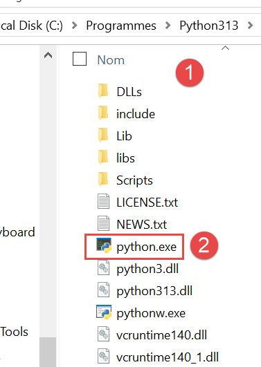
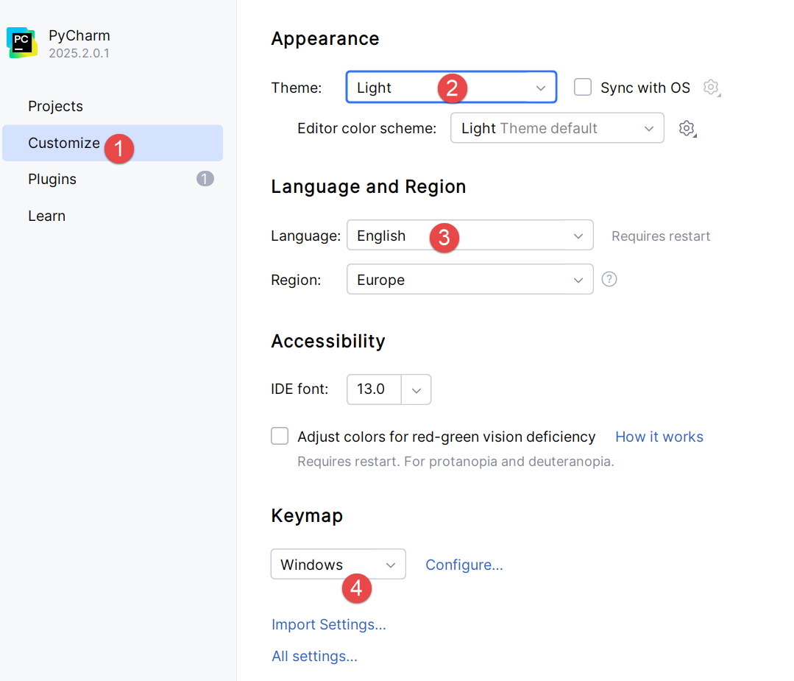
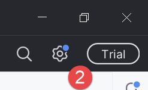
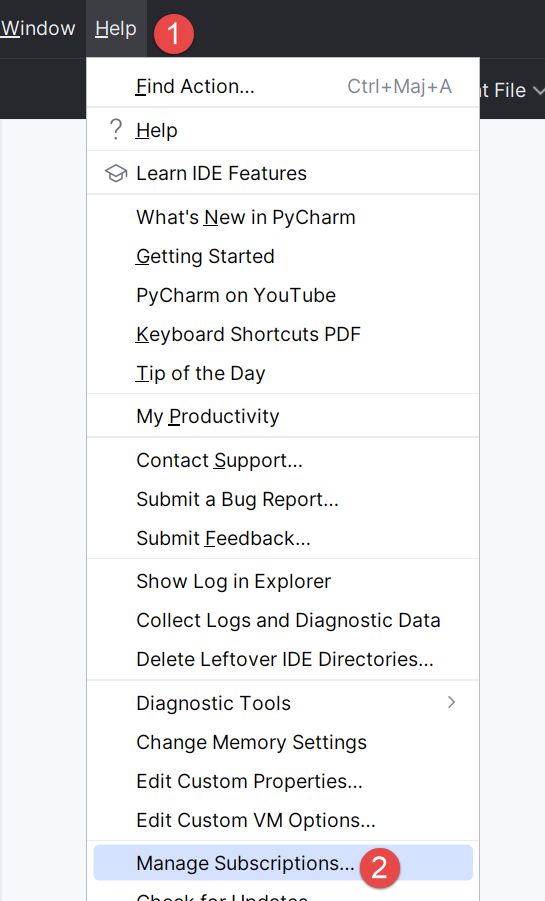
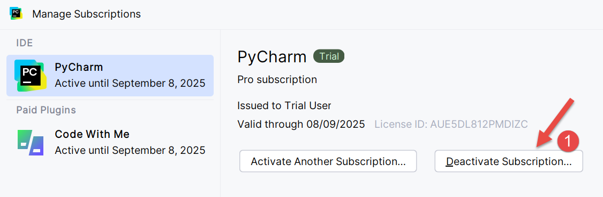
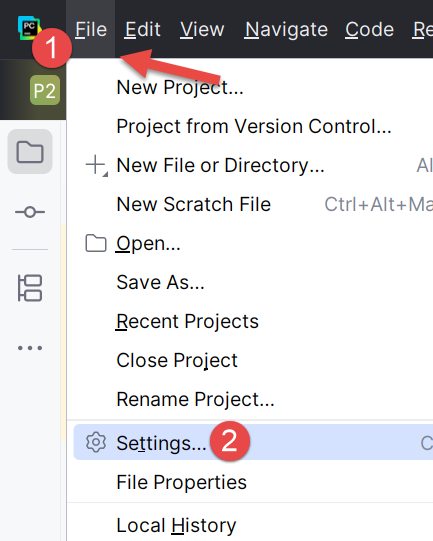
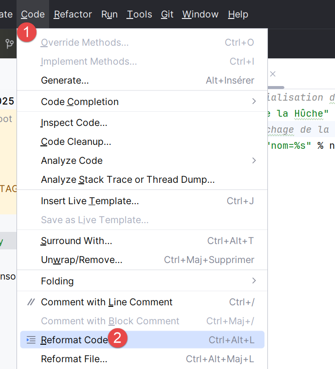
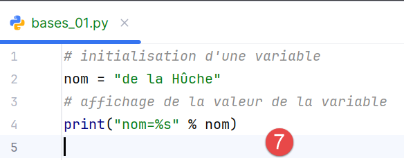
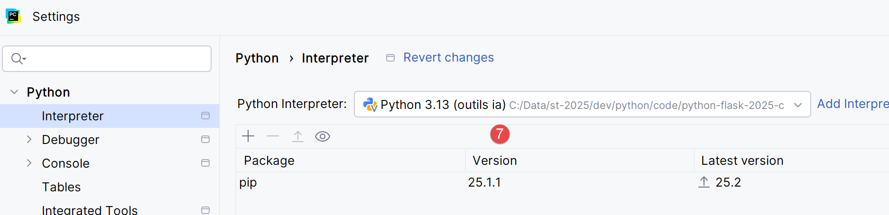

3. Configuración de un entorno de desarrollo
Aquí mostramos el entorno de desarrollo utilizado para probar los scripts de Python generados por la IA. Esta sección está dirigida a principiantes en Python. Si ya dispones de un entorno de desarrollo de Python, omite toda esta sección y pasa a la siguiente.
3.1. Python 3.13.7
Los ejemplos de este documento se han probado con el intérprete de Python 3.13.7 disponible en |https://www.python.org/downloads/| (agosto de 2025) en un equipo con Windows 10:

En [1-2], descargue el ejecutable del instalador de Python y ejecútelo.
La instalación de Python crea la siguiente estructura de archivos [1]:

Para ejecutar Python en modo interactivo, haz doble clic en [2]. A continuación se muestra un ejemplo de código Python que puedes ejecutar:

El indicador >>> te permite introducir una instrucción de Python que se ejecuta inmediatamente. El código escrito anteriormente tiene el siguiente significado:
Líneas:
- 1: Inicialización de una variable. En Python, no se declara el tipo de las variables. Estas adoptan automáticamente el tipo del valor que se les asigna. Este tipo puede cambiar con el tiempo;
- 2: visualización del nombre. «name=%s» es un formato de visualización en el que %s es un parámetro formal que denota una cadena. name es el parámetro real que se mostrará en lugar de %s;
- 3: el resultado de la visualización;
- 4: visualización del tipo de la variable «name»;
- 5: La variable «name» es de tipo «class» aquí. En Python 2.7, tendría el valor <type 'str'>;
Ahora, abramos una consola de Windows:

El hecho de que hayamos podido escribir [python] en [1] y de que se haya encontrado el ejecutable [python.exe] demuestra que está en la variable PATH del equipo Windows. Esto es importante porque significa que las herramientas de desarrollo de Python podrán encontrar el intérprete de Python. Podemos verificarlo de la siguiente manera:

- En [1], salimos del intérprete de Python;
- En [2], el comando que muestra la ruta PATH para los ejecutables en el equipo Windows;
- En [3], vemos que la carpeta del intérprete de Python 3.13 forma parte de la ruta PATH;
3.2. El IDE PyCharm Community
Para compilar y ejecutar los scripts de este documento, hemos utilizado el editor [PyCharm] Community Edition, disponible (a fecha de agosto de 2025) en la URL |https://www.jetbrains.com/fr-fr/pycharm/download/#section=windows|:


Descargue el IDE PyCharm Community (aquí para Windows) [1-4] e instálelo.
Iniciemos el IDE PyCharm. Aparecerá un panel de configuración:

- Haz clic en [1] para crear un icono de PyCharm en el escritorio;
- Haga clic en [2] para abrir cualquier carpeta del sistema de archivos como proyecto de Python;
- En [3], los archivos de Python tendrán la extensión .py;
- Haga clic en [4] para pasar al siguiente paso;
La siguiente ventana vuelve a mostrar las opciones de configuración [1]:

- En [2], seleccione el tema [Light]. El usuario puede elegir el tema que prefiera;
- En [3], deja el IDE en inglés;
- En [4], mantenga los atajos de Windows;
Creemos nuestro primer proyecto de Python [1-2]:

Esto abre la siguiente ventana:

- En [2], introduce el nombre de la carpeta que se creará para el proyecto;
- En [3], especifique que las diferentes versiones del código que se guardarán serán gestionadas por el sistema de control de versiones Git. PyCharm le permite utilizar otros;
- En [4-6], especifique que su proyecto utilizará un entorno virtual. El entorno virtual creará una carpeta [.venv] en la raíz del proyecto. Todos los complementos (paquetes) utilizados por su proyecto se guardarán en esta carpeta. Esto garantiza el aislamiento entre proyectos a la hora de buscar complementos. El proyecto busca sus complementos únicamente dentro de su propio entorno virtual [.venv] y en ningún otro lugar, donde podría encontrar complementos con los mismos nombres pero versiones potencialmente diferentes que a veces son parcialmente incompatibles entre sí;
El IDE de PyCharm muestra el proyecto creado de la siguiente manera:

- En [1-2], la estructura de directorios del proyecto;
- En [3], la carpeta del proyecto;
- En [4], la carpeta del entorno virtual del proyecto. Aquí es donde se instalarán los complementos que utilizaremos para el proyecto;
Antes de empezar a programar, profundicemos en la configuración del IDE:

- Haz clic en [1] para mostrar el menú principal;

- En [1-2], configura el IDE;

- En [1-4], especifique que desea que el menú principal aparezca encima de la barra de herramientas principal. No es obligatorio hacerlo. Lo hacemos aquí para aclarar las capturas de pantalla incluidas en este documento. Confirme el cambio;
A partir de ahora, el menú principal se mostrará siempre [1]:

Continuemos configurando el IDE:

En la esquina superior derecha de la ventana de PyCharm, se te ofrece la posibilidad de probar la versión Pro de PyCharm. Dependiendo de cómo hayas instalado PyCharm, es posible que la versión Pro se haya instalado automáticamente (2025). Esto añade opciones de menú adicionales.

Si has instalado la versión de prueba Pro para un mes, verás el mensaje [2] en la esquina superior derecha.
Para mantener la coherencia con las capturas de pantalla que siguen, te mostraré cómo cancelar la versión de prueba Pro del IDE (puedes volver a ella en cualquier momento):

- En [1-2], gestiona tus suscripciones al IDE;

- En [1], desactiva la versión Pro. El IDE se reiniciará;
Ahora vamos a configurar el intérprete de Python que ejecutará nuestro proyecto. Recordamos que descargamos uno en un paso anterior:


- En [1-3], configura el intérprete de Python del proyecto;
- En [4], la ruta del intérprete;
- En [5], los paquetes (complementos) asociados a este intérprete;
En [4], busquemos la ruta completa al intérprete que se está utilizando:


- En [3], vemos que el intérprete de Python utilizado se encuentra en la carpeta del entorno virtual del proyecto [.venv];
Es posible cambiar el intérprete de Python, lo que puede modificar los complementos disponibles para el proyecto:

- En [4], añade un intérprete de Python;

- En [5], añada un intérprete local. PyCharm buscará entonces en la ruta PATH del equipo el archivo binario [python.exe];

- En [1], especifique que el nuevo intérprete debe utilizar el entorno virtual existente del proyecto [.venv];
- En [2], el IDE sugiere como intérprete la aplicación de Python instalada en un paso anterior;
- Confirme esta selección;

- En [4], el nuevo intérprete;
- En [5], los paquetes a los que tendrá acceso el proyecto. Esta es la principal diferencia derivada del cambio de intérprete. Si gestionas varios proyectos que utilizan paquetes diferentes, es preferible utilizar los paquetes del entorno virtual de cada proyecto. De esta forma, tendrás control sobre las versiones de los complementos que utilizas. Por este motivo, mantendremos el intérprete del entorno virtual:


Profundicemos un poco más en la configuración:
 |  |
- En [1-2], acceda al modo de configuración de la IDE;
- En [3-4], configura las opciones del sistema;
- En [5], no solicite confirmación antes de salir del IDE;
- En [6], al salir del IDE y si hay un proceso en ejecución iniciado por el código ejecutado, deténgalo;
- En [7], al iniciar el IDE, el último proyecto utilizado no se vuelve a abrir automáticamente. El usuario puede elegir su proyecto;
- En [8], cuando el usuario gestiona varios proyectos al mismo tiempo, cada proyecto tiene su propia ventana;
- En [9], hemos especificado la carpeta predeterminada para nuestro proyecto;
Ahora podemos empezar a programar. Comencemos creando una carpeta donde colocaremos nuestro primer script de Python:
 |  |
- Haz clic con el botón derecho del ratón en el proyecto y, a continuación, [1-3] para crear una carpeta;
- En [4], escribe el nombre de la carpeta: se creará en la carpeta del proyecto;

A continuación, vamos a crear un script de Python:
 |  |
Haz clic con el botón derecho del ratón en la carpeta [bases] y, a continuación, en [1-4]:
 |  |
- Recuerda que incluimos el sistema de control de versiones Git en nuestro proyecto. Esto se hizo al crear el proyecto, cuando marcamos la opción de Git. Git puede tomar instantáneas del proyecto en diferentes etapas de su desarrollo. Aquí, en [1-3], el IDE nos pregunta si queremos incluir el archivo [bases.py] que estamos creando actualmente en la instantánea. Respondemos que sí [3]. Además, marcamos [2] para que esto se haga automáticamente cada vez que se cree un archivo. Volveremos brevemente sobre Git un poco más adelante;
- En [4-5], se ha creado el script [bases_01] y está listo para ser editado;
Escribamos nuestro primer script:
 |  |
- Líneas 1 y 3: los comentarios comienzan con el símbolo #;
- Línea 2: inicialización de una variable. Python no declara el tipo de sus variables;
- Línea 4: salida a pantalla. La sintaxis utilizada aquí es [formato % datos] con:
- formato: nombre=%s, donde %s denota el marcador de posición para una cadena. Esta cadena se encontrará en la parte [datos] de la expresión;
- datos: el valor de la variable [nombre] sustituirá al marcador de posición %s en la cadena de formato;
- Con [1-2], puedes reformatear el código según las recomendaciones del organismo regulador de Python. También puedes pulsar Ctrl-Alt-L en tu teclado;
En la captura de pantalla, se puede ver que parte del texto está subrayado. PyCharm señala los errores ortográficos en los comentarios y las cadenas. Se refiere a ellos como errores tipográficos. De forma predeterminada, está configurado para texto en inglés. Para evitar que señale errores tipográficos en francés, proceda de la siguiente manera:
 |  |
- En [1-2], configura el IDE;
- En [3-6], desactive la opción [Corrección ortográfica] en el editor;
 |  |
En [7], el resaltado de errores tipográficos ha desaparecido. El script se ejecuta haciendo clic en el icono [8] de la barra de herramientas principal. El resultado es el siguiente:

- En [1-2], se ha abierto una ventana de resultados;
- En [3], podemos ver que el código de [bases_01.py] ha sido ejecutado por el intérprete de Python en el entorno virtual del proyecto;
- En [4], el resultado de la ejecución;
Para ejecutar los scripts de este documento, descargue el código desde la URL |Generar un script de Python con herramientas de IA| (nube de OneDrive) y, a continuación, en PyCharm, proceda de la siguiente manera:
 |
- En [1-2], cierra el proyecto en el que estás trabajando actualmente;

- En [1], selecciona la opción [Proyectos];
- En la ventana [2], verás una lista de los proyectos más recientes en los que has trabajado;
- En [3], indica que deseas abrir un proyecto existente;
 |
- En [1], abre la carpeta que has descargado;
 |
- En [1-2], selecciona el proyecto de PyCharm;
Configuremos este proyecto para que tenga un entorno de ejecución virtual:
 |
- En [1-2], configura el nuevo proyecto;
 |
- En [3-4], configura un intérprete para el proyecto;
 |
- En [5-6], seleccione un entorno de ejecución virtual;
 |
- En [7], el nuevo intérprete de Python que se utilizará para el proyecto;
Una vez hecho esto, puedes ejecutar los scripts del proyecto:
 |